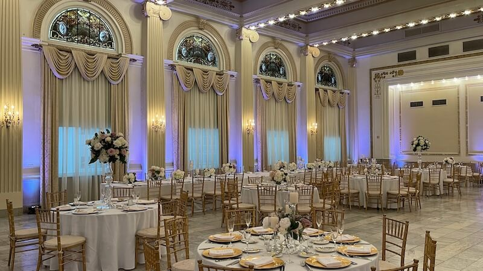
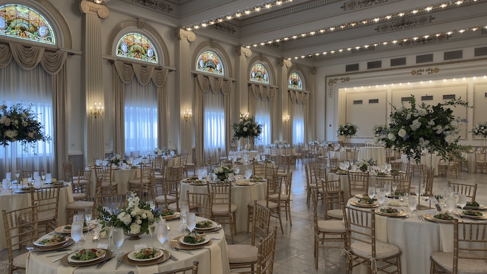
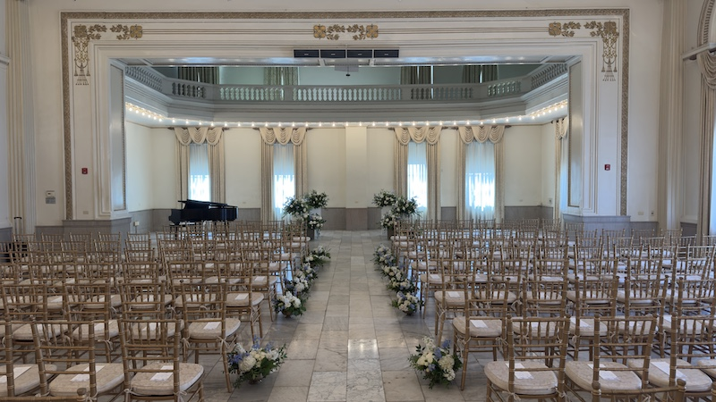
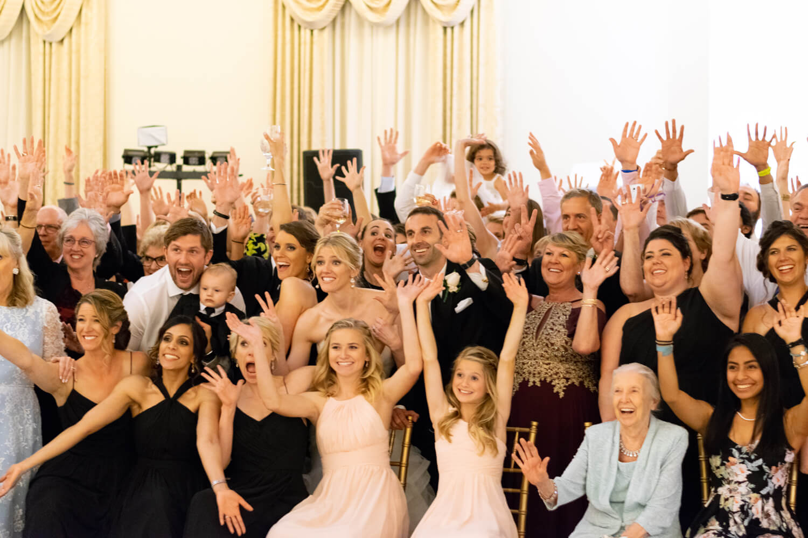
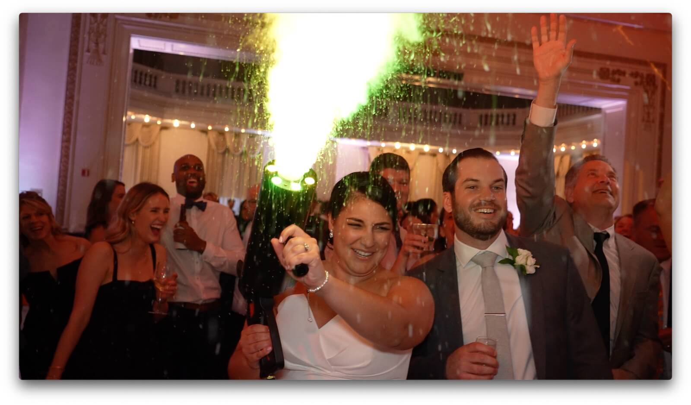

The Westin Great Southern Columbus Ballroom — Columbus's Most Elegant Wedding Venue
If you're dreaming of a luxurious downtown Columbus wedding, the Westin Great Southern Columbus delivers one of the most breathtaking ballrooms in all of Central Ohio. The historic ballroom (known as the McKinley Ballroom) blends timeless architecture with modern amenities for a reception that leaves guests talking for years.
Stained glass windows. Carrera white marble floors. Soaring ceilings lined with warm Edison-style lighting. Floor-to-ceiling mirrors. Natural light by day, romantic glow by night. This room needs almost no extra decoration — it arrives spectacular on its own.

- One wedding at a time — the Westin's staff is entirely focused on your event, start to finish
- Tall centerpieces shine in this room — the soaring ceilings reward height in ways most Columbus venues simply cannot
- Natural light pours through stained glass windows during daytime ceremonies, turning to warm golden glow by evening
- After the reception, retire upstairs to a complimentary wedding night suite — no driving, no goodbyes to the night
- Out-of-town guests can walk upstairs instead of calling an Uber at midnight — 189 hotel rooms means nobody has to leave early

Wedding Ceremonies at the Westin Columbus
The Westin handles your entire wedding day under one roof. Beyond the ultimate reception space, couples can hold a beautiful ceremony in the grand ballroom itself — or opt for the more intimate Seneca Room for smaller gatherings.

Here's how a typical ceremony-to-reception flow works at the Westin:
- The ceremony is set up in two-thirds of the ballroom, with the altar at the High Street side. White draping creates a dramatic hidden entrance for the bridal party.
- After the ceremony, guests move to the lobby for cocktail hour. The wedding party typically heads off for portraits during this time.
- While guests enjoy cocktails, the Westin staff quickly transforms the ballroom from ceremony to full reception setup.
- Guests return to the ballroom for the reception — and the wow moment when they see the full transformation is something most couples say is a highlight of the evening.
Westin Columbus Wedding Reception — The Dance Floor Experience
The Westin Great Southern Columbus ballroom dance floor is one of the best in Columbus. Large enough for a full crowd, beautiful enough to be the centerpiece of every photo. Warm ballroom lighting, mirrored walls, and high ceilings create an atmosphere that's genuinely hard to find anywhere else in Central Ohio.
First dance at the Westin Great Southern Columbus — the mirrors, the lighting, the moment.


DJ Rod has performed more weddings at the Westin Columbus than almost any DJ in Columbus.
See real wedding recaps, watch videos, and find out why Columbus couples trust Buckeye Sounds to keep their dance floor packed from first dance to last song.
Westin Columbus Wedding Tips — What to Know Before You Book
DJ Rod of Buckeye Sounds has performed at more Westin Great Southern Columbus weddings than almost any DJ in the city. Here's what he tells every couple considering this venue:
Décor Tips for the Westin Columbus Ballroom
- Tall centerpieces are your best friend here. The high ceilings beg for height — low arrangements can get lost in the room.
- Don't be afraid of bold, deeper colors. Rich jewel tones like burgundy, navy, or emerald make this ballroom absolutely stunning.
- Uplighting on the columns is one of the best investments couples make in this room. The columns become dramatic focal points that transform the entire space.
Hotel Room Tips for Wedding Guests at the Westin
- Unlike most hotel chains, the Westin's rooms are not all identical. Corner rooms are significantly larger — worth requesting for family members or the wedding party.
- The variety is actually a fun talking point — guests compare notes the next morning over breakfast.
Timing and Scheduling at the Westin Columbus
- Saturday weddings typically have two windows: noon–5PM or 7PM–midnight. Couples can also book the ballroom for the full day.
- The one-wedding-at-a-time policy means the staff is entirely focused on your event — and it shows in every detail.
Westin Columbus Wedding FAQs
More Westin Columbus Wedding Photos
A closer look at receptions, ceremonies, and unforgettable moments at the Westin Great Southern Columbus.